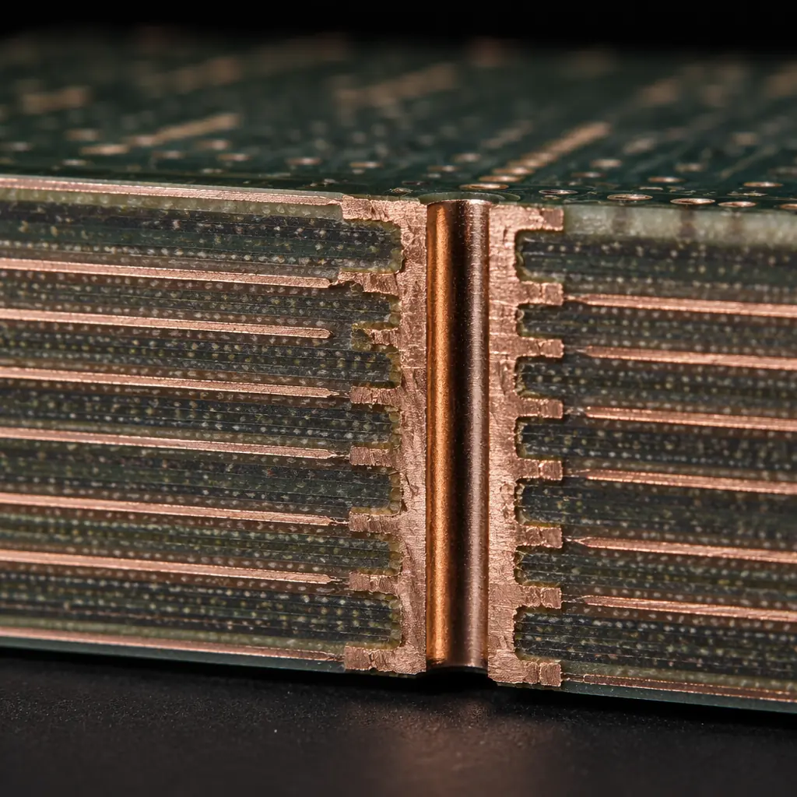
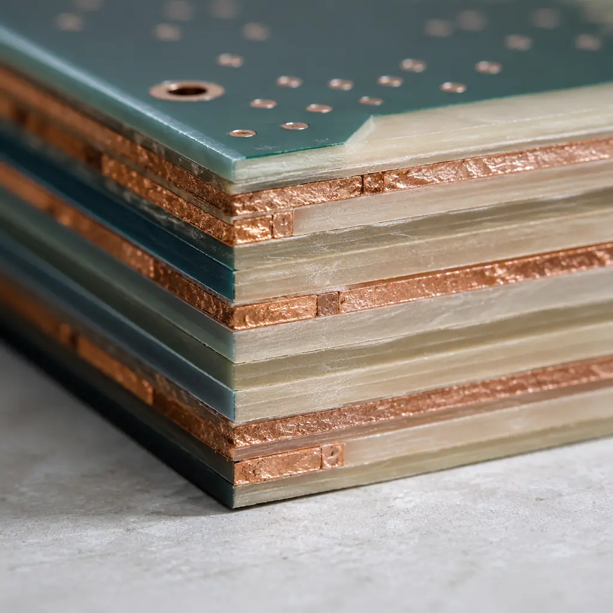
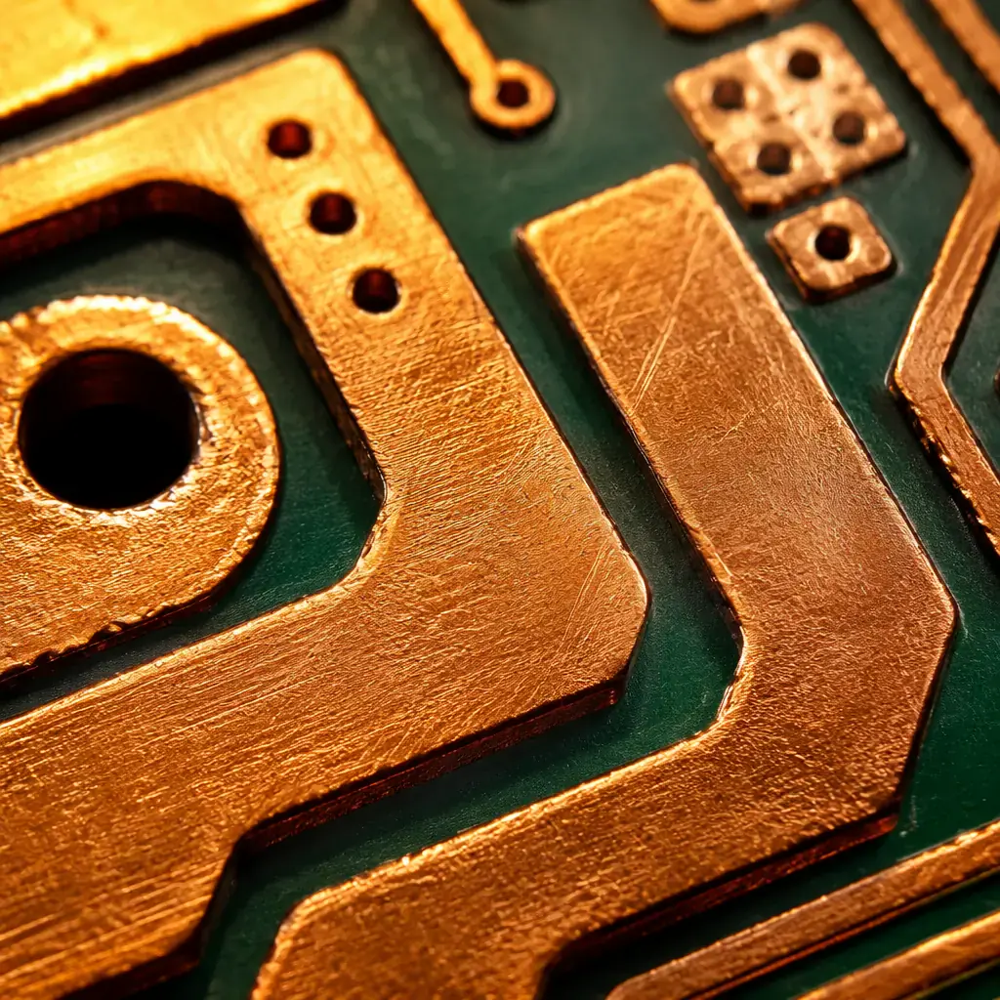

PCB stackup is the single most consequential decision in a board design — and the one most engineers defer to their CM's default. You route your traces, run your SI simulations, and only then realize the impedance targets don't close because the dielectric thickness you assumed doesn't match what's actually available in production. Or worse: the board delaminates after 500 thermal cycles because your material pairing created a CTE mismatch the resin system couldn't handle. A stackup is not a list of layers. It's a system of materials, copper weights, dielectric thicknesses, and impedance targets that must close simultaneously under thermal and mechanical stress. At Huaxing PCBA, we manufacture 80,000 sqm of PCBs per month — from 2-layer consumer IoT boards to 32-layer aerospace backplanes — and the stackup is where every design either works or fails. This guide covers the four decisions that define your stackup, with real production-floor numbers and DFM rules that prevent the most common respin triggers.

Decision 1: How Many Layers Do You Actually Need?
The layer count question is usually answered by signal count, not signal integrity. Engineers count their nets, estimate routing channels per layer, and pick the smallest number. That approach ignores three critical factors that make a 6-layer board cheaper than a heavily-routed 4-layer in total program cost: return path quality, power delivery impedance, and EMI containment.
Every Signal Layer Needs an Adjacent Reference Plane
This is the non-negotiable rule of modern PCB design. A signal traveling on Layer 3 with its return current on Layer 2 (one dielectric away) sees ~3-5× lower loop inductance than a signal whose return path is two dielectrics away on Layer 5. The difference between a 0.1mm and 0.4mm signal-to-reference separation changes your crosstalk margin from comfortable to failed at 1 GHz. On a 4-layer board with the standard SIG-GND-PWR-SIG stackup, the bottom signal layer's return current must travel through the power plane decoupling capacitors — adding 2-5 nH of inductance that erases your impedance control. The fix: move to 6 layers (SIG-GND-SIG-PWR-GND-SIG) so every signal layer has a solid reference plane within one dielectric thickness. For more on when to upgrade your design rules, see our HDI technology guide covering microvia transitions and layer-pair routing.
Power-Ground Plane Pairs Are Worth Their Weight in Copper
A tightly spaced power-ground plane pair (0.1-0.2mm separation) forms a distributed high-frequency capacitor that provides ~50-100 pF/cm² of inter-plane capacitance. This directly reduces the number of discrete decoupling capacitors you need — and the vias and mounting inductance that comes with them. Our production data shows that moving from a 4-layer (one PWR-GND pair at 0.4mm separation) to a 6-layer (one PWR-GND pair at 0.1mm) typically eliminates 30-40% of the decoupling capacitor BOM line items on a digital board running at 100+ MHz. The math: inter-plane capacitance C = ε₀εᵣ × A/d. Halving the separation doubles the capacitance. Halving it from 0.4mm to 0.1mm quadruples it. That's free decoupling — paid for by two additional copper layers that cost roughly $0.80-1.50 per board at 1,000-unit volume.
Layer Count vs Layer Utilization — The 70% Rule
If you're routing >70% of available channel capacity on any layer, you don't have enough layers. At 70% utilization, your autorouter starts creating serpentine detours that add 15-30% to average trace length, increase via count, and degrade signal timing. The right approach: count your nets by bus width and frequency class. High-speed differential pairs (USB 3.0, PCIe, DDR) consume 2-3× the routing real estate of single-ended signals because of the spacing rules (3W rule for intra-pair, 5W for inter-pair). A single 32-bit DDR4 interface with address/command/control lines can consume an entire routing layer on a 6-layer board. See our impedance control guide for differential pair spacing requirements at each data rate.
Procurement Takeaway: The cost of an extra layer pair (~$1-2 per board at medium volume) is almost always cheaper than the cost of a respin caused by inadequate layer count ($3,000-8,000 in engineering time + 2-3 weeks schedule slip). When in doubt between N and N+2 layers, choose N+2.
Decision 2: Dielectric Material — FR-4, High-Tg, Rogers, or Hybrid?
The dielectric material in your stackup determines three things that no amount of clever routing can fix: dielectric constant (Dk) stability across frequency, dissipation factor (Df) that sets insertion loss, and glass transition temperature (Tg) that limits your assembly and operating temperature window. Choosing the wrong material is the most expensive mistake in stackup design — because it can't be fixed without changing the entire board.

| Material | Tg (°C) | Dk @ 1 GHz | Df @ 1 GHz | Dk @ 10 GHz | Relative Cost | Best Application |
|---|---|---|---|---|---|---|
| Standard FR-4 | 130-140 | 4.2-4.6 | 0.018-0.022 | Unstable | 1× | Sub-500 MHz, consumer |
| High-Tg FR-4 | 170-180 | 4.0-4.4 | 0.015-0.018 | ~4.2-4.8 (drifts) | 1.2-1.5× | Automotive, industrial, 6+ layers |
| Rogers 4350B | >280 | 3.48 ±0.05 | 0.0037 | 3.48 ±0.05 | 5-8× | RF/microwave, 5G, antenna |
| Rogers 4003C | >280 | 3.38 ±0.05 | 0.0027 | 3.38 ±0.05 | 6-10× | High-power RF, radar, SATCOM |
| Polyimide | >250 | 3.5-4.0 | 0.005-0.008 | Stable | 4-6× | Flex/rigid-flex, aerospace, high-temp |
| PTFE (Teflon) | >300 | 2.1-2.6 | 0.001-0.002 | Stable | 10-15× | mmWave, 77 GHz radar, satellite |
| Hybrid (FR-4 + Rogers) | 170-180 | Mixed per layer | Mixed per layer | Layer-dependent | 1.8-3× | Mixed-signal: digital on FR-4, RF on Rogers |
Standard FR-4 — Fine Below 500 MHz, Dangerous Above
Standard FR-4 (Tg 130-140°C) works for the majority of PCB designs — consumer electronics, IoT endpoints, basic industrial controls — where signals stay below 500 MHz and operating temperature stays under 105°C. The problem emerges at higher frequencies: FR-4's Dk is both frequency-dependent and loosely specified, varying from 4.2 at 100 MHz to potentially 4.8 at 5 GHz. That 15% Dk swing means your 50Ω microstrip that was perfect at 100 MHz is now 46Ω at 5 GHz — adding 1.5 dB of return loss. For digital boards running DDR4 at 2400 MT/s (1.2 GHz fundamental), standard FR-4 is already marginal. The second problem: standard FR-4's glass weave (106, 1080, 2116 styles) creates localized Dk variations where a trace runs over a glass bundle vs a resin-rich area — called the "fiber weave effect" — causing differential skew of 4-8 ps/inch at 10 Gbps. Read our PCB materials selection guide for a deep dive on glass weave styles and their skew impact by data rate.
High-Tg FR-4 — The Minimum for Multi-Layer and Automotive
High-Tg FR-4 (Tg 170-180°C) is the standard material for any board with 6+ layers or any application requiring lead-free reflow. The higher Tg prevents the Z-axis expansion that causes barrel cracking in plated through-holes during assembly. Standard FR-4 expands at ~50-70 ppm/°C in the Z-axis below Tg but jumps to ~250-300 ppm/°C above it. For a 1.6mm thick board going through 260°C lead-free reflow — which is 120°C above standard FR-4's Tg — the Z-axis expansion is roughly 3-4%. That strains every plated via barrel, and after 5-6 reflow cycles (SMT top + bottom + rework), you'll see micro-cracks. High-Tg pushes the transition 40°C higher, cutting the expansion by half. At Huaxing, we default to High-Tg FR-4 for anything above 4 layers — the material premium ($0.15-0.30 per board) is negligible compared to the cost of one field return caused by an intermittent via. For automotive applications requiring IATF 16949 compliance, see our automotive PCB requirements guide covering thermal cycling validation protocols.
Rogers & High-Frequency Laminates — When Dk Stability Matters More Than Cost
Rogers 4350B achieves Dk 3.48 ±0.05 across the entire 100 MHz to 10 GHz range — a ~1.5% variation vs FR-4's potential 15%. That stability means your impedance-controlled traces actually maintain their target impedance across your entire operating band. Rogers also offers Df of 0.0037 at 10 GHz vs FR-4's 0.018 — roughly 5× lower dielectric loss. For a 12-inch trace at 5 GHz, that's the difference between 1.2 dB loss (Rogers) and 5.8 dB loss (FR-4). The hybrid approach — Rogers on outer layers for RF signals, FR-4 for inner digital and power planes — captures 80% of the performance benefit at 30% of the cost of an all-Rogers stackup. This is the dominant architecture in 5G base station boards, automotive radar (77 GHz), and satellite communication systems. For more on designing RF boards from manufacturing perspective, see our RF PCB manufacturing guide.
Decision 3: Copper Weight — More Than Just Current Capacity
Copper weight selection is usually driven by a single question: "How many amps does this trace carry?" But copper weight affects three other parameters that engineers frequently overlook: impedance (thicker copper = wider trace for same impedance = different routing density), thermal conductivity (critical for power electronics), and the minimum etch resolution your CM can hold.
| Copper Weight | Thickness (µm) | Current Capacity (A/mm width, 10°C rise) | Min Trace/Space (mil) | Typical Use |
|---|---|---|---|---|
| 0.5 oz (18µm) | 17-18 | 0.5 A/mm | 3/3 | HDI, fine-pitch BGA, signal layers |
| 1 oz (35µm) | 34-35 | 1.0 A/mm | 4/4 | Standard signal + power, most boards |
| 2 oz (70µm) | 68-72 | 2.2 A/mm | 6/6 | Power distribution, motor drivers, LED |
| 3 oz (105µm) | 102-108 | 3.5 A/mm | 8/8 | High-current power, automotive BMS |
| 4 oz (140µm) | 136-144 | 4.8 A/mm | 10/10 | Power converters, welding equipment |
| 6 oz (210µm) | 204-216 | 7.5 A/mm | 14/14 | EV battery management, heavy industrial |
The critical interaction most designers miss: when you mix copper weights in a stackup (e.g., 1 oz for signal layers and 3 oz for power), the different copper thicknesses create asymmetric residual stress during lamination. The board warps. The rule: total copper weight should be symmetric about the board centerline. A stackup with 1 oz on Layer 1 and 3 oz on Layer 6 needs balancing — either add a 3 oz layer opposite, or split the 3 oz into two 1.5 oz layers symmetrically placed. Asymmetric copper is the #2 cause of board warpage in our incoming quality data, right behind uneven copper distribution within a single layer. For power electronics requiring heavy copper, see our heavy copper PCB manufacturing guide.

Decision 4: Impedance Control — Specify It Before You Route
Impedance control is not a post-layout check. It's a pre-layout constraint that determines your dielectric thickness, trace width, and copper weight simultaneously. The three parameters form a triangle — change one and the other two must change to maintain the target impedance. If you route first and check impedance later, you'll need to respin either the layout or the stackup. Neither is cheap.
Standard Impedance Targets and Their Dielectric Requirements
For 50Ω single-ended microstrip on standard 1 oz copper with 0.1mm prepreg (FR-4, Dk=4.2): trace width ≈ 0.18mm (7 mil). Tighten the prepreg to 0.075mm and you need 0.13mm (5 mil) — now you're pushing standard etch capabilities. For 100Ω differential (edge-coupled) with 0.15mm spacing on the same stackup, each line needs ~0.10mm (4 mil) — entering the zone where controlled impedance becomes process-dependent. Our standard impedance tolerance is ±10% for standard boards and ±5% for RF/controlled-impedance orders, verified by TDR measurement on every panel. The ±5% tier requires tighter etch control, more frequent TDR coupons per panel, and a ~10-15% price adder — but it's mandatory for anything running above 5 Gbps.
Differential Pair Configurations: Edge-Coupled vs Broadside-Coupled
Edge-coupled pairs (two traces side-by-side on the same layer) dominate 95% of designs because they're simpler to route. But broadside-coupled pairs (two traces vertically aligned on adjacent layers) offer two advantages for dense boards: ① they consume zero additional routing real estate on a single layer — the pair occupies one trace width ② they achieve tighter coupling (lower odd-mode impedance) for the same trace geometry, which matters for HDMI 2.1 and DisplayPort at 12+ Gbps. The tradeoff: broadside coupling requires precise layer-to-layer registration — a 25µm misalignment shifts the impedance by 5-8%. If your CM's layer registration tolerance is >25µm, broadside coupling becomes a yield risk. At Huaxing, our laser-direct imaging (LDI) registration holds ±15µm layer-to-layer, making broadside coupling viable for production volumes.
The Impedance Coupon: Your Insurance Policy on Every Panel
An impedance coupon is a small test structure on the panel margin that replicates your critical trace geometry — same width, same spacing, same dielectric — and gets TDR-tested before the panel ships. The coupon catches process variation that your CAD simulation can't predict: a prepreg that flowed 5µm thicker during lamination, an etch that over-cut by 3µm, a copper plating that added an unexpected 2µm. At our facility, every impedance-controlled order ships with a TDR test report showing measured impedance vs target for each controlled structure. We've caught 3.2% of panels at the coupon stage that would have produced boards meeting visual inspection but failing impedance at functional test. The coupon costs ~$5-8 per panel — roughly 1% of the cost of finding the failure at your end. See our PCB testing methods guide for the full quality assurance workflow from coupon to functional test.
Real-World Stackup Configurations — What We Build Every Day
The following six stackups represent the configurations our CAM engineering team processes most frequently. Each includes total thickness, dielectric thickness between layers, and the key design constraint it solves.
| Layers | Total Thickness | Stackup Sequence | Key Constraint | Typical Application |
|---|---|---|---|---|
| 2 | 1.6mm | SIG / FR-4 1.5mm / SIG | Cost-optimized, no impedance control | LED driver, simple I/O, power supply |
| 4 | 1.6mm | SIG / 0.2mm PP / GND / 1.0mm Core / PWR / 0.2mm PP / SIG | Impedance on outer layers only | IoT endpoint, sensor board, HMI |
| 6 | 1.6mm | SIG / 0.1mm PP / GND / 0.2mm Core / SIG / 0.2mm Core / PWR / 0.1mm PP / SIG | Every signal layer has adjacent reference | MCU + memory, industrial control, gateway |
| 8 | 1.6mm | SIG / 0.1mm PP / GND / 0.15mm Core / SIG / 0.15mm Core / PWR / 0.15mm Core / GND / 0.1mm PP / SIG | Two internal signal layers between planes | Automotive ECU, medical imaging, FPGA |
| 10 | 2.0mm | SIG / GND / SIG / PWR / GND / SIG / GND / PWR / SIG / GND / SIG | Maximum routing density, dual stripline | Telecom backplane, server, network switch |
| 12-32 | 2.4-4.0mm | Multiple SIG/GND/PWR triples with buried vias | Layer-pair routing, HDI microvias | Aerospace avionics, military radar, ATE |
6 DFM Rules That Prevent Stackup-Related Respins
These rules come from our CAM engineering team's pre-production review process. They're the issues we flag on incoming Gerber packages before releasing to production — and the ones that cause the most schedule delays when they're not caught early.
Always Balance Your Copper — Symmetrically, by Weight, About the Centerline
For an 8-layer board, if Layer 2 has 70% copper fill (a solid ground plane with some clearance holes), Layer 7 should have approximately 70% as well — not 20% (signal layer with routing channels). The copper distribution doesn't need to be identical mirror-image, but the copper weight × fill percentage should be within 15% across the centerline. Our incoming inspection rejects boards where copper asymmetry exceeds 25% — those boards will warp >0.75% (IPC-6012 Class 2 limit) out of the press. The fix: add copper thieving (dummy fill) to low-copper layers to bring them within balance of their symmetrical counterpart.
Don't Mix More Than 3 Different Prepreg Types in One Stackup
Each prepreg type (106, 1080, 2116, 7628) has a different resin content and flow characteristic during lamination. Using four or more types increases the risk that one prepreg flows differently than its neighbor, creating thickness variation across the panel. The practical limit: 3 prepreg styles maximum. If your impedance targets demand four different dielectric thicknesses, you have a stackup design problem — not a materials problem. Revisit your layer arrangement to reduce the number of unique dielectric gaps. Our CAM engineers can propose alternative arrangements during DFM review — upload your stackup for a free evaluation.
Specify Finished Board Thickness as a Range, Not a Single Number
Writing "1.6mm" on your fabrication drawing means "1.6mm ±10%" per IPC-6012 Class 2 — a range of 1.44-1.76mm. That's a 0.32mm window. But writing "1.6mm" as a single number often leads the CM to assume you need exactly 1.6mm, triggering unnecessary process adjustments. Instead, write "1.60mm ±0.16mm" to make the acceptable range explicit. This matters because every 0.05mm of thickness variation changes your microstrip impedance by roughly 1-2Ω — enough to push a 50Ω ±10% trace to the edge of its tolerance. For more on how manufacturing tolerances flow through your design, see our DFM tips guide.
Via Aspect Ratio — Your Stackup Thickness Limits Your Minimum Drill
The via aspect ratio (board thickness / drill diameter) must stay below 10:1 for mechanical drilling and 1:1 for laser-drilled microvias. A 2.0mm thick board with 0.2mm mechanical drills has an aspect ratio of 10:1 — at the limit. Push to 2.4mm with the same drills and you're at 12:1, where plating uniformity inside the via barrel degrades and the risk of barrel cracking in thermal cycling increases. The fix: either increase your minimum drill size or reduce your total board thickness. This constraint is why 20+ layer boards are rarely thinner than 2.4mm — the via aspect ratio forces the thickness up to accommodate reasonable drill sizes.
Hybrid Stackups Need Special Lamination Cycles — Allow Extra Lead Time
When mixing FR-4 and Rogers materials in the same stackup, the different cure temperatures and CTEs require a two-step lamination process: first laminate the Rogers layers at their lower cure temperature (~177°C for Rogers 4000 series), then add the FR-4 layers in a second press cycle at standard FR-4 temperature (~185°C). Each lamination cycle adds 4-6 hours to the bare PCB fabrication time. A standard 8-layer FR-4 board ships in 5-7 days. An 8-layer hybrid (Rogers outer + FR-4 inner) ships in 8-12 days. Plan your prototyping schedule accordingly. For tight timelines, see our quick-turn PCB manufacturing guide covering accelerated lead time options.
Specify Your Surface Finish During Stackup Design, Not After Layout
The surface finish interacts with your stackup because it affects the final copper thickness on outer layers. ENIG adds 3-5µm of nickel + 0.05-0.1µm of gold. HASL adds an unpredictable 5-25µm of solder that can vary across the panel. If your impedance calculation assumed bare copper thickness and your CM applies HASL on top, the additional 10-15µm of solder on a 35µm trace changes the effective cross-section by 30-40% — and your impedance by 3-5Ω. For impedance-controlled boards, always specify ENIG or immersion silver — finishes that add a controlled, thin, and uniform layer. Write the finish in your stackup table, not just in a separate fabrication note. See our ENIG vs HASL surface finish comparison for thickness and flatness data across all finish types.
Your Stackup Is Your Foundation — Build It First
Every hour spent on stackup design before routing saves 5-10 hours of layout rework, SI debugging, and respin management later. The four decisions — layer count, dielectric material, copper weight, and impedance targets — are not independent. They form a closed system where changing any parameter forces at least one other to change. Treat them as one design problem, not four separate ones.
At Huaxing PCBA, our CAM engineering team reviews every incoming Gerber package against these stackup rules before release to production. In the last 12 months, we've flagged 312 stackup issues at the DFM stage — unbalanced copper, incompatible material pairings, impedance targets that didn't close, via aspect ratios beyond process capability — each one a potential respin that our customers avoided. The most common root cause: the stackup was designed in isolation, without production feedback.
Before you send your next design to fabrication, run through these four questions: ① Does every signal layer have an adjacent reference plane? ② Is the copper balanced symmetrically about the centerline? ③ Are your impedance targets achievable with the dielectric thicknesses you specified? ④ Is your minimum via diameter compatible with your total board thickness? If any answer is "I'm not sure," upload your stackup for a free DFM review and our engineers will confirm — or correct — before a single panel goes into production.